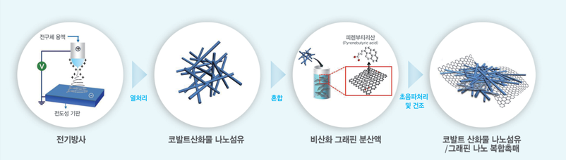
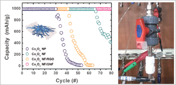

Report by Subjects
Report by Subjects
KAIST RESEARCH ACHIEVEMENTS
High-capacity and Long-cycle Lithium-Oxygen Batteries
(Department of Materials Science & Engineering) Il-Doo Kim & Seokwoo Jeon
(Department of Materials Science & Engineering) Il-Doo Kim & Seokwoo Jeon
To solve global issues regarding shortages of fossil fuels and greenhouse effects due to abrupt carbon dioxide emission, the development of eco-friendly, next-generation, electric vehicles has been drastically accelerated. In 2030, lithium-oxygen batteries using high performance and cost-effective catalysts will have been successfully developed and electric vehicles composed of new lithium-oxygen battery systems will be able to make 800 km round trips without recharging. By significantly reducing the purchase cost of electric vehicles, such vehicles will gradually spread to the general public, thereby relieving more and more environmental issues such as abnormal climate change.
R&D Report

Lithium-oxygen (Li-O2) batteries, which involve a unique operating mechanism (2Li + O2 related to the formation and decomposition of solid lithium peroxide (Li2O2) products onto carbonaceous electrodes, have received a lot of attention due to their energy density that is five to ten times higher than that of Li-ion batteries. However, Li2O2<->Li2O2 batteries often suffer from poor performance due to the low electron conductivity of the insulating Li2O2 products that accumulate on the surface of the electrodes after discharging. Therefore, current Li-O2 batteries have several major problems such as low efficiency, extremely poor cycling, and limited rate capability, and these issues should be resolved so that these batteries can be used for impractical applications. Many studies have thus focused on developing highly efficient and cost-effective catalysts for O2 cathodes in order to significantly improve the reaction kinetics of Li-O2 batteries.
This study focused on the development of high aspect ratio, one-dimensional (1-D), Co3O4 nanofibers attached to 2-D non-oxidized graphene nanoflakes as a highly efficient catalyst of an oxygen electrode for high capacity and long cycle Li-O2 batteries. In tailored hybrid nanocomposite catalysts, 1-D Co3O4 nanofibers provide a high degree of catalytic activity for both the oxygen evolving reaction and the oxygen reduction reaction; 2-D non-oxidized graphene nanoflakes offer high surface area and excellent electronic conductivity. In this regard, Li-O2 batteries that are composed of hybrid nanocomposite catalysts delivered a high 1st discharge capacity of 10,500 mAh/g and superior cyclability for 80 cycles with a limited capacity of 1,000 mAh/g. The 1-D Co3O4 nanofibers attached to 2-D non-oxidized graphene nanoflakes exhibited superb performance as highly efficient catalysts for high capacity and long cycle Li-O2 batteries; this performance is in contrast to that of previously reported nano catalysts.
 Fig 2. Schematic illustration of the synthetic strategy of Co3O4 NF/graphene composite
 Fig 3. Morphologies of Co3O4 NF/GNF composite
Fig 3. Morphologies of Co3O4 NF/GNF composite
 Fig 4. Cycling data of Co3O4 NF/graphene composite and photograph of Li-O2 battery cell
Expectation Effectiveness
The 1-D Co3O4 nanofibers attached to 2-D non-oxidized graphene nanoflakes can be introduced as a high performance and cost-effective catalyst for Li-O2 batteries instead of expensive, existing catalysts, such as platinum or gold. The Li-O2 battery system, which is optimized for next generation electric vehicles will enable us to drive a 800 km round trip without recharging. Furthermore, electrospinning as a most suitable synthetic route for mass-production of 1-D structures, can be successfully applied to fabricate diverse classes of nanofiber catalysts for Li-O2 batteries.
Research Funding
ㆍThis work was supported by the Center for Integrated Smart Sensors funded by the Ministry of Science, ICT & Future Planning as Global Frontier Project and National Research Foundation
Research Results
ㆍPatents Pending: one patent
ㆍPublished paper: W. H. Ryu, T. H. Yoon, S. H. Song, S. Jeon, Y. J. park, I. D. Kim, Nano Letters 13, 4190-4197 (2013) (Impact Factor = 13.025).